Mint Insights
Every broker ships an accountant.
Nobody ships a coach.
Mint Insights is the F&O insights surface inside CapMint — a diagnosis of why a trader’s money moved, sitting next to the ledger that records that it did, with neither one pretending to be the other.
01 · The problem
91% lose money. Every app shows them the same ledger.
That 91% is SEBI’s figure for retail F&O traders, not ours. The response from every trading app has been the same: a better ledger. Cleaner P&L, itemised charges, a tidier holdings list. All of it accurate — and all of it a record of what already happened.
None of it says why. Where the technique is sound and where it leaks. Which habit costs money on expiry day.
Technique
+5.6pp
Edge — win rate is comfortably above the breakeven rate this method needs.
Money
−₹5,000
Net P&L — charges ate the gross gains. The account still shrank.
Showing only net P&L tells a trader with a working method to quit. Showing only edge tells someone bleeding to brokerage that everything is fine. So the design problem was never “add more charts” — it was how to put a diagnosis and an audit on one surface without either lying about the other.
02 · The split
Two questions, two voices, two tabs
The answer was to stop reconciling them. Split the surface in two, give each half one question, and commit to a distinct voice for each.
| Patterns | Performance | |
|---|---|---|
| Question | Did my technique work? | Did my money grow? |
| Voice | The coach, reviewing game tape | The accountant, reading the bahikhata |
| Hero metric | Edge = Win rate − Breakeven rate, in pp | ROC = Gross P&L ÷ Max capital deployed, in % |
| Tense | Present, diagnostic | Past, factual |
| Sounds like | “Adding to losers is costing you 3.4pp.” | “You deployed ₹2.4L at peak. Charges took 11% of it.” |
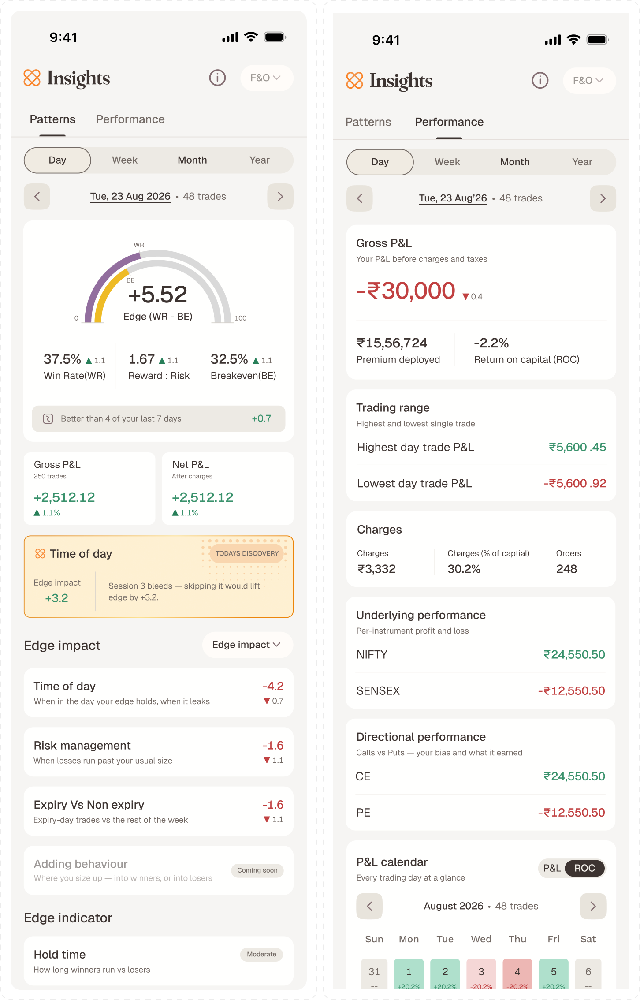
The Voice and Tense rows aren’t flavour text in a deck — they’re a writing rule every string on both tabs was checked against. Patterns speaks in present tense about a habit that is still happening and can still be changed. Performance speaks in past tense about a period that is closed. The moment Performance copy starts giving advice, or Patterns copy starts reading like a statement, the split has failed and the trader is back to guessing which number to trust.
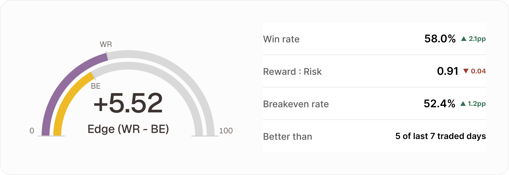
Edge is a gap, so the hero draws it as one. Breakeven rate is the win rate this trader’s reward-to-risk ratio actually requires; win rate is what they got. The visible distance between the two markers is the number in the middle.
The product tagline — Patterns produce Performance — is the information architecture. Three words, and the trader already knows there are two tabs and which one causes the other.
03 · Scope
What v1 actually ships
Deliberately narrow. F&O only, one nightly refresh, no live intraday recompute, no journal, no external broker import. Everything below had to earn its place against one question: does this change what the trader does tomorrow?
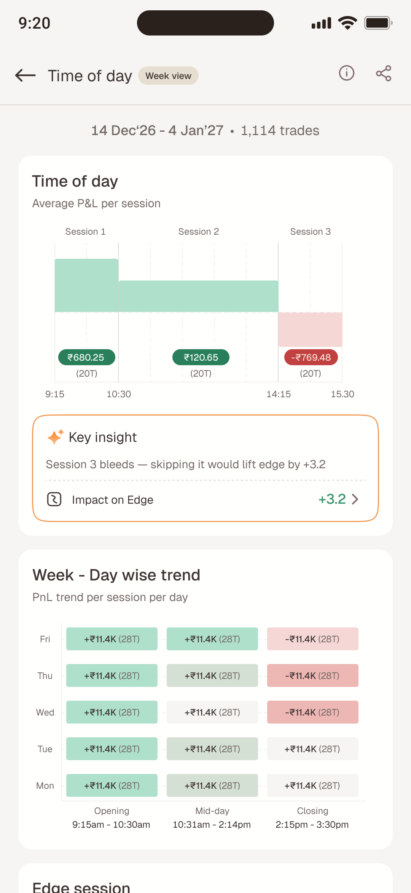
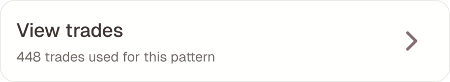
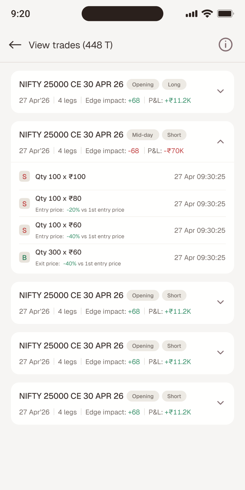
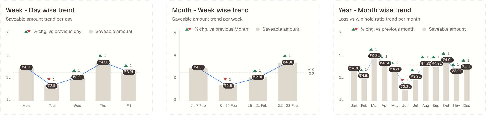
04 · The unit of insight
A counterfactual, not a chart
Showing a trader that they add to losing positions is easy. Making them care is the design problem.
“You added to losers 12 times” is trivia. It has no unit, no stake, no obvious next move. So every Impact pattern answers one question in one number: what would your edge have been without this habit? Drop the offending subset, recompute edge over what’s left, show the difference.
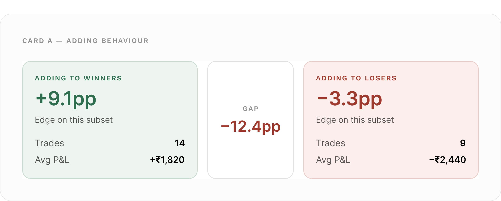
Two panels and a gap chip — the comparison does the explaining, so the copy doesn’t have to. Panel colour follows the sign of that side’s edge, not its label: if a trader somehow makes money adding to losers, that panel goes green and the insight text adapts.
Tapping the impact number opens a three-row sheet showing the arithmetic. No black box — the trader sees the baseline, the counterfactual, and the difference.
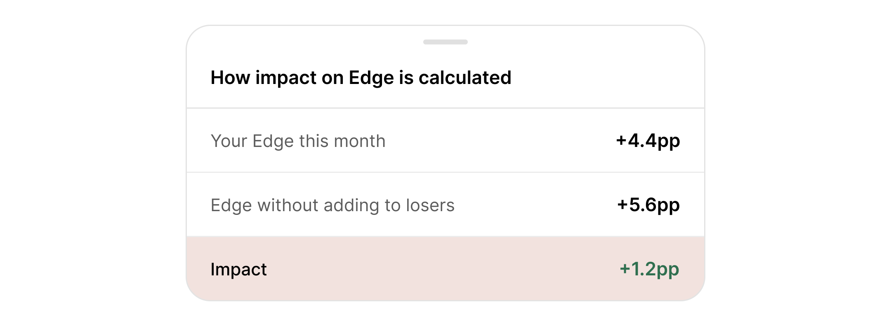
The same three rows on all four Impact patterns. Row 2’s label is the only thing that changes — “without adding to losers”, “without the closing session”, “if blown losses were capped at 2× your median loss”.
That one number then does several jobs: it ranks the four patterns on the landing page, drives the sort control, selects Today’s Discovery (picking the most negative impact — the most consequential leak), and differenced against last period, it lets a trader watch a leak close.
05 · Guardrails
A naive counterfactual tells everyone to stop trading
If “drop your worst trades and recompute” is the mechanism, the optimum is always trade less — and at the limit, trade nothing.
Technically true. Useless as coaching, and corrosive coming from the app you trade on. Each pattern got a cap, chosen so the counterfactual always describes a reachable version of the same trader rather than a different person.
Time of day
Drop at most 2 of the 3 sessions. If all three are bad, drop only the worst two — never all three. A trader who trades no session isn’t a trader.
Underlying performance
Drop at most 3 losing underlyings; if they only trade 3, drop at most 2; and never drop their best performer, even in a period where it lost money.
Risk management
Cap each blown loss at 2× the median loss instead of deleting it. The trade was a fair call — the size wasn’t.
Directional & trading range
Drop only the single worse side or worst trade. Where the counterfactual is meaningless — all trades profitable — impact is 0 and the sheet shows boundary copy instead of a fake number.
Risk management’s cap turned out to be the most interesting, because the framing changed the takeaway. “Delete your blown losses” implies you shouldn’t have taken those trades. “Cap them at 2× your usual loss” concedes the entry and indicts the exit — truer, and more actionable. It also produces a rupee number instead of a percentage-point one:
“3 blown losses this month. Sizing them like your other losses would have saved ₹8,400.”
A saveable amount in rupees outperforms an abstract edge delta every time. Same counterfactual, denominated in the unit the trader actually feels.
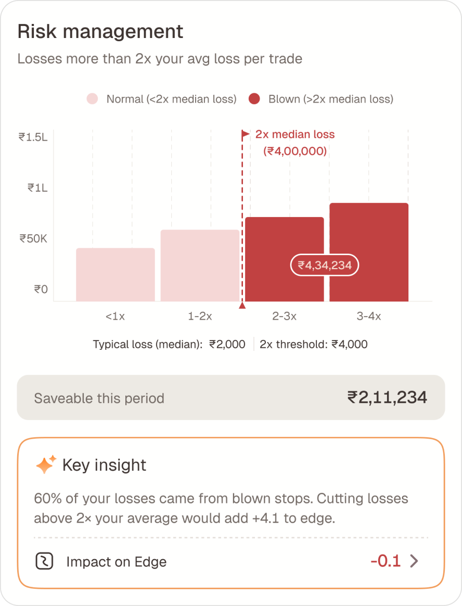
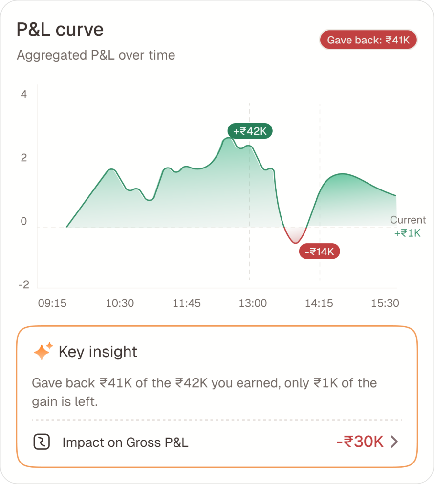
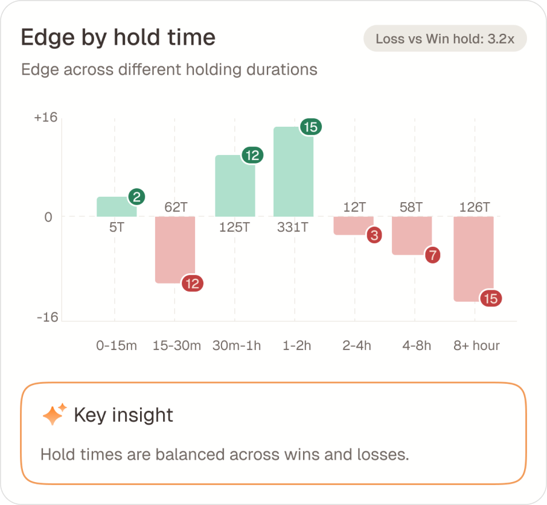
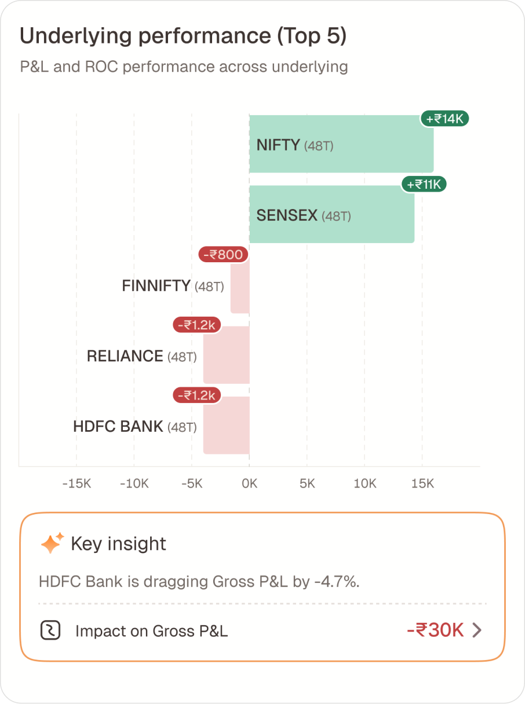
07 · Trust
Yesterday’s view has to be yesterday’s view, forever
A trade opened Monday and closed Wednesday belongs to which day? The pipeline keys every matched trade to its exit date, never its entry date. It reads like a backend detail. It’s a trust decision.
- 01
It matches what the trader felt. The P&L landed on Wednesday. Wednesday’s day view should contain it, because that’s the day it happened to them.
- 02
History must not mutate. Key by entry date and closing a position today silently rewrites a day the trader already looked at — their edge, their win rate, their calendar cell. An insights product whose past changes under you is worse than none at all.
The same principle governs a position opened Monday and partly closed Monday afternoon: the closed portion is emitted as a complete matched trade on Monday, and the remainder becomes a fresh open position for Tuesday. Monday reconciles with what the broker showed on Monday. Nothing gets restated.